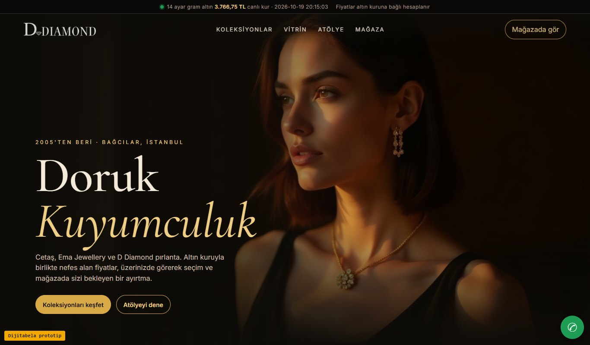
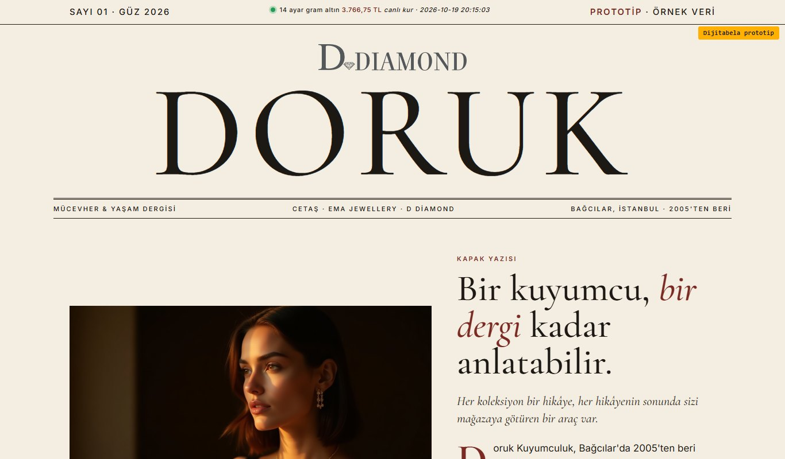
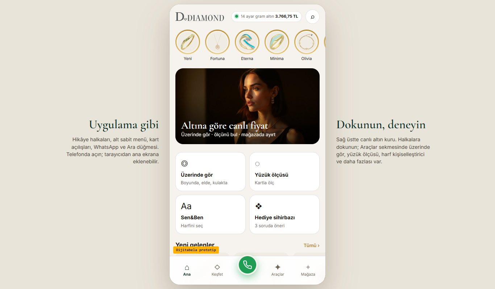
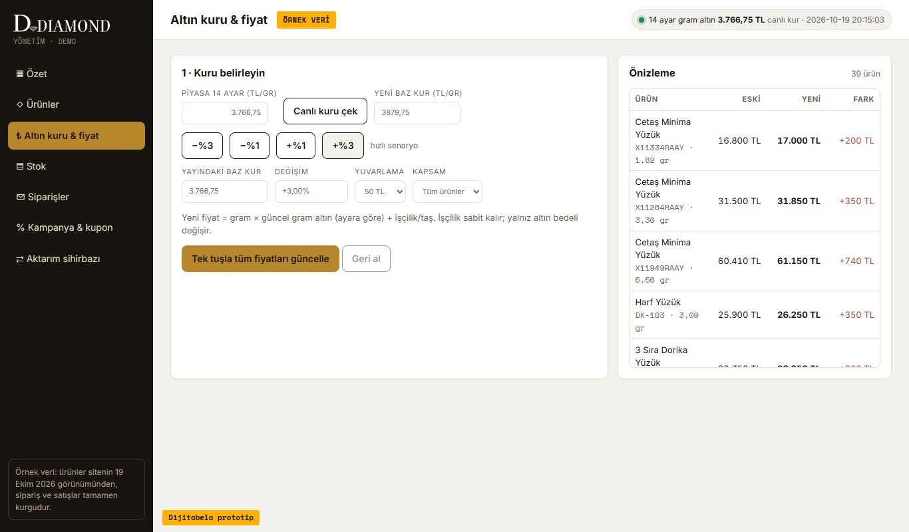

Doruk Kuyumculuk: dijital ekspertiz, 3 çalışan tasarım ve tek net fiyat
Merhabalar, dorukkuyumculuk.com.tr adresini herkese açık olarak inceledik. 2005'ten beri güvenle çalışan bir kuyumcu için sitenizin hızlanması, altın kuruyla konuşması ve müşteriyi mağazaya taşıması gerekiyor. Aşağıda bulduklarımız ve her biri tıklanıp denenebilen üç tasarım var.
Dijital ekspertiz: ne gördük?
Yalnızca herkesin görebildiği bilgilere baktık; sunucunuza ya da hesaplarınıza erişim gerekmedi.
Alışkanlıkla yazılan ve dış bağlantılarda sık kullanılan /iletisim/ adresi "Sayfa Bulunamadı" sayfasına düşüyor; iletişim bilgileriniz ayrı bir adreste (/bize-ulasin/) duruyor. Telefon numaranızı arayan müşteri ilk denemede boş bir sayfa görüyor.
İncelediğimiz 90 üründe yalnızca 39 farklı ürün adı var; örneğin 13 ürünün adı birebir "Cetaş Fortuna Kolye". Meta açıklaması da her biri için aynı kalıp ("Stilinizi Yansıtın: … Koleksiyonu Doruk'ta"). Google bu sayfaları ayırt etmekte zorlanır, müşteri de arama sonucunda hangisinin hangisi olduğunu anlayamaz.
Ürün sayfasında sipariş için görünür bir WhatsApp düğmesi ya da çağrı metni yok; yalnızca ürün bilgisinin altında bir simge duruyor ve bağlantısı uluslararası biçimde değil (başında 0 ile yazılmış). Bu biçim çoğu zaman doğru sohbeti açmaz. Satışı mağazaya ve telefona taşıyan en kısa yol burada zayıf.
Ürün sayfalarında ayar ve gram bilgisi var (bu iyi bir temel); ama fiyat sabit bir rakam olarak duruyor, güncel kur ya da gram × kur hesabı gösterilmiyor. Kur oynadıkça yüzlerce fiyatı tek tek güncellemek gerekir; güncellenmeyen fiyat da müşteride şüphe yaratır.
Ana sayfada banka logoları şeridi var ama ürün sayfasında taksit seçeneği ya da aylık tutar yazmıyor. 50-150 bin TL'lik bir parçada karar çoğu zaman aylık taksite bağlıdır.
Ürün sayfalarında fiyat ve stok bilgisi Google'a bildiriliyor; ancak marka ve ağırlık şemada yok, incelediğimiz ürünlerin çoğunda model kodu (SKU) da eksik, ürün adının sonunda "| Doruk Kuyumculuk" site adı kalmış, açıklama alanı kalıp bir cümle. Google'da zengin sonuç ve alışveriş görünürlüğü için bu alanlar doldurulmalı.
Önbelleğe alınmamış ürün ve kategori sayfalarında ilk yanıt yaklaşık 3 saniyede geliyor (sonraki ziyaretlerde 0,1 sn). Yalnız sayfanın metin dosyası (sıkıştırılmadan) ana sayfada yaklaşık 300 KB, ürün sayfasında yaklaşık 260 KB; ana sayfada 62 görsel kutusu var. Mobil müşteri için bu süre uzun.
Google verisine dayanan açık dizinlerde işletme 4,5 puan / 8 yorumla görünüyor; ancak adres (Fevzi Çakmak, Osmangazi Cd. 68/A), telefon (…11 63) ve saat (08:30–19:30) sitenizdeki adres (Sancaktepe Mah. Çarşı Cad. 84/A), telefon (…11 64) ve saat (09:00–19:00) bilgisinden farklı. Tutarsız adres ve telefon, Google'da güveni ve yol tarifi isteyen müşteriyi kaybettirir. 8 yorum da 2005'ten beri çalışan bir mağaza için az görünüyor.
Ana sayfadaki kategori görselleri stok fotoğraf dosyaları (iStock adlı); menüde "Cart (0)" gibi İngilizce ifadeler var; 404 sayfası "Sanki kaybolmuşsun gibi…" diye gayriresmî konuşuyor. Bir kuyumcunun güven ve prestij dili bunlardan zarar görür.
Site haritası ve ürün şeması mevcut, 7 blog yazısı (yüzük ölçüsü, altın bakımı, pırlanta seçimi) var, ürün sayfalarında ayar/gram/ürün kodu paylaşılıyor, mobil uyum etiketi tanımlı. Yani bu işi sıfırdan değil, iyi bir hammaddenin üzerine kuruyoruz.
Bizim yapacaklarımız
- Her ürüne ayrı ad, açıklama ve şema: Google'da her parça kendi başına bulunur
- Fiyatı altın kuruna bağlayan yeni sistem; kur değişince tek tuşla güncelleme
- Görünür WhatsApp, Ara ve "Mağazada ayırt" düğmeleri
- Taksit hesaplayıcı ve ödeme bilgisi her ürün sayfasında
- Yeni bir iletişim sayfası; eski adresler de kaybolmaz
- Google İşletme bilgilerinin tek ve doğru hale getirilmesi için kontrol listesi
3 tasarım, hepsi çalışır hâlde
Üçü de sitenizdeki gerçek ürün fotoğrafları, adları ve fiyatlarıyla (örnek olarak) hazırlandı. Tıklayın, telefonunuzdan da deneyin.

Vitrin
- Tam ekran koleksiyon fotoğrafları
- Altın kuruna bağlı canlı fiyat
- "Üzerinde gör": boyunda, elde, kulakta
- Yüzük ölçüsü bulucu (kredi kartıyla)

Dergi
- Numaralı bölümlerle koleksiyon hikâyeleri
- Baş Harfi Sen&Ben canlı kişiselleştirici
- Alyans çifti eşleştirici
- Hediye sihirbazı, taksit hesabı

Uygulama
- Hikâye halkaları, alt sabit menü
- Kart açılışları, tek dokunuşla WhatsApp / Ara
- Mağazada ayırt: gün ve saat seçimi
- 360° mağaza önü görünümü, Instagram akışı
Üçünde de ortak olanlar: altın kuruna bağlı fiyat, üzerinde gör, yüzük ölçüsü, Sen&Ben, alyans, hediye sihirbazı, taksit, mağazada ayırt, Instagram gönderileri ve Bağcılar mağazası için 360° Street View. Model görselleri yapay zekâ ile üretilmiş örneklerdir; yayında gerçek çekimlerinizle değişir.
Yönetim paneliniz: fiyatı tek tuşla güncelleyin

- Altın kuru değişti mi? Tek tuşla bütün katalog yeniden fiyatlanır, geri alınabilir
- Ürün listesi, gram ve işçilik düzenleme, stok uyarıları
- Sipariş durumları ve müşteriye WhatsApp bildirimi
- Kampanya ve kupon, satış grafiği
- Mevcut ürünlerinizi aktarma sihirbazı ve eski → yeni adres (301) eşleme önizlemesi
- Canlı altın kuru fiyatı: gram × ayar × işçilik; müşteri fiyatın nasıl oluştuğunu görür
- Üzerinde gör: aynı modelde seçtiği ürünü boyun, el, kulak ve bilekte dener
- Yüzük ölçüsü bulucu: kredi kartıyla ekranı ayarlar, mevcut yüzüğünü ekrana koyup ölçer
- Baş Harfi Sen&Ben kişiselleştirici: harfini seçer, kolye ya da bilekliği canlı görür
- Alyans çifti eşleştirici ve hediye sihirbazı: iki ölçü, tek çift fiyat; kime, ne kadar, hangi tarz
- Taksit hesaplayıcı: kart ve taksit sayısına göre aylık tutar
- Mağazada gör: ürünü Bağcılar mağazanızda ayırtır, gün ve saat seçer, hazır WhatsApp mesajı gelir
Teknik mimari
Görseller küçültülür ve yeni nesil biçime çevrilir, sayfalar önbelleğe alınır; ürün sayfası ilk ziyarette de hızlı açılır.
SSL sertifikası, güvenli ödeme sayfası, yönetim paneli için yetkili giriş. Kart bilgisi sitenizde tutulmaz.
Ürünler, siparişler ve görseller her gün yedeklenir; sorun olursa önceki güne dönülür.
PayTR, iyzico ya da banka sanal POS entegrasyonu; taksit seçenekleri sağlayıcıdan gelir.
331 ürün, kategoriler ve görseller yeni sisteme aktarılır; ürün adı, ayar, gram ve model kodu da taşınır.
Eski adreslerin her biri yeni adresine 301 (kalıcı yönlendirme) ile yönlenir; bugün 404 veren /iletisim/ adresi de doğru sayfaya gider.
4-5 haftalık takvim
Tasarım seçimi, logo ve görsellerin teslimi, aktarım planı.
Seçilen tasarım ve tüm özellikler hazırlanır, önizleme linki gelir.
Ürün, kategori ve görseller aktarılır; yönetim paneli kurulur.
PayTR / iyzico / banka POS bağlanır; yönlendirmeler ve testler yapılır.
Alan adı yeni sisteme çevrilir, panel eğitimi verilir, 3 ay destek başlar.
Tek seferlik; gizli ek ücret yok. Ödeme: %50 başlangıçta, %50 teslimde · faturalı.
- Seçtiğiniz tasarım ve yukarıdaki tüm özellikler
- Mevcut ürün, kategori ve görsellerin aktarımı
- Eski adreslerden yeni adreslere 301 yönlendirme
- Yönetim paneli: altın kuruyla toplu fiyat güncelleme
- Ödeme entegrasyonu (PayTR / iyzico / banka POS)
- SSL ve günlük yedek altyapısı
- Teslimden sonra 3 ay ücretsiz destek
İsteğe bağlı: aylık bakım ve güncelleme desteği 750 TL / ay (KDV dahil değildir). 3 aylık ücretsiz destek bitince devam etmek isterseniz.
Sık sorulanlar
Mevcut ürünlerim ve fotoğraflarım ne olacak?
Hepsi yeni sisteme aktarılır: ürün adı, fiyat, ayar, gram, model kodu, kategori ve görseller. Aktarımdan sonra panelden tek tek ya da toplu düzenleyebilirsiniz.
Google'daki sıralamam kaybolur mu?
Eski adreslerin her biri yeni adresine kalıcı olarak yönlendirilir (301). Böylece Google ve dış bağlantılar sizi yeni sayfada bulur. Yayından sonra ilk haftalarda Google'ın yeni sayfaları taramasını birlikte izleriz.
Altın fiyatı her gün değişiyor; siteyi sürekli güncellemem gerekecek mi?
Hayır. Panelde kur değişince tek tuşla bütün ürün fiyatları gram × ayar + işçilik formülüyle yeniden hesaplanır; isterseniz yuvarlama kuralı belirlersiniz. Geri almak da tek tuş.
Ödeme hesabı kimin adına olacak?
PayTR, iyzico ya da banka sanal POS hesabı sizin adınıza açılır; para doğrudan size gelir. Komisyon ve taksit oranları sağlayıcının sözleşmesine göre belirlenir.
Siteyi mağazadaki satıştan ayırmadan kullanabilir miyim?
Evet. "Mağazada gör" özelliğiyle müşteri ürünü ayırtır, gün ve saat seçer; mesaj mağazanıza ulaşır. Online ve mağaza satışı birbirini tamamlar.
Başka bir şehirdeyim ya da işlerim yoğun, nasıl çalışacağız?
Tamamen uzaktan, kısa görüşmelerle ilerliyoruz. Logo ve görselleriniz bir kez teslim edilir; önizleme linkiyle onay verirsiniz.
Bu e-postaya cevap vermeniz yeterli: size uygun bir saatte kısa bir görüşme ayarlayalım ya da sorularınızı yazın.